Projecten
Een greep uit de tuinen die we aanlegden in Strijen en Klaaswaal. Per project: wat de klant wilde en wat wij adviseerden.
Strijen, Bernhardstraat
Overkapping met buitenbar
Door de houten overkapping open te houden en schuine lijnen in de bloembak te maken, ontstaat er een mooie loopruimte in de tuin. De buitenbar is gemaakt van gebogen, gegalvaniseerde staalmatten, gevuld met sierkeien en afgedekt met dezelfde tegels als de bestrating.
Ons advies
- Tegels met een coating tegen vuil en groenaanslag
- Een overkapping uit eigen constructie, met verstelbare palen
- Sfeerverlichting rond de schuttingen en onder de overkapping
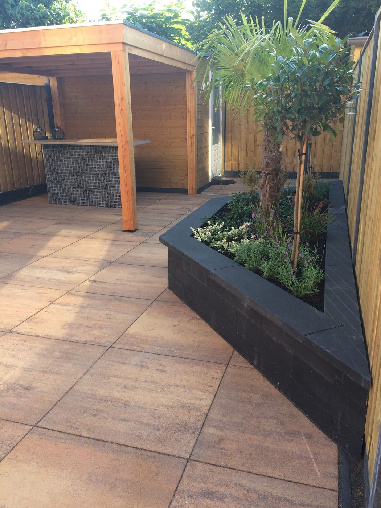

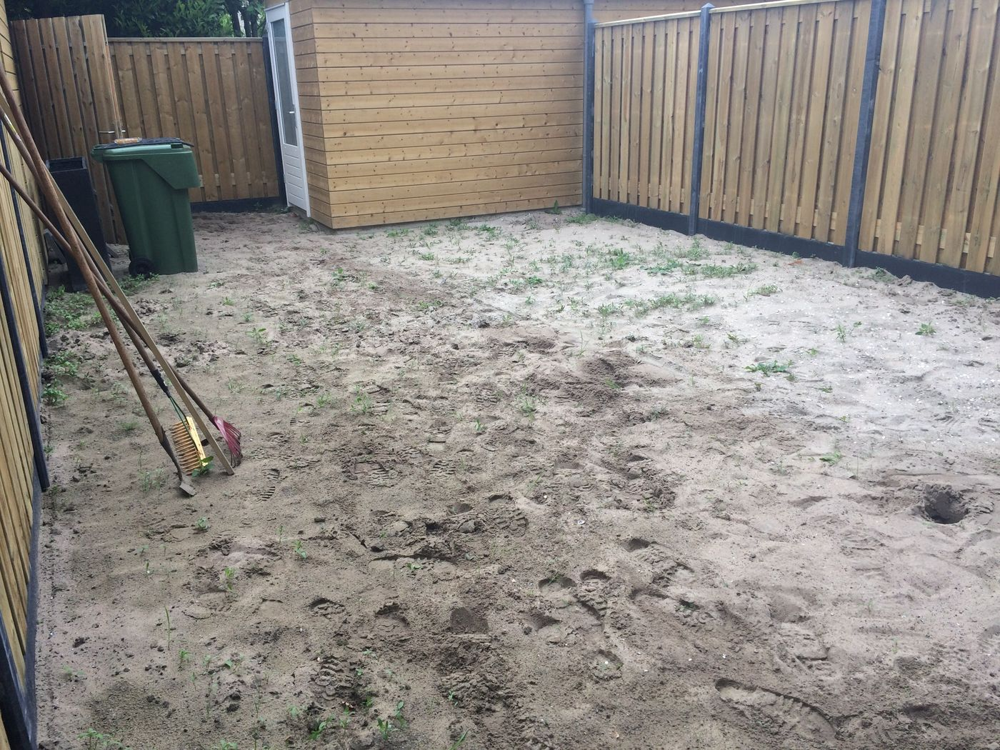
Strijen, Kerstraat
Hardhouten vlonderterras
De kabels en leidingen lagen niet waar de tekening het aangaf. Daarom hebben we alle ca. 70 palen met de hand geboord en uitgegraven, zonder schade. Over de volle breedte van het vlonderterras kwam een traptrede.
Ons advies
- Gecertificeerd hardhout, voor de duurzaamheid
- Antiworteldoek onder de vlonder
- Inbouwverlichting op 12 volt in de randen
- Kant-en-klare graszoden voor het oude gazon


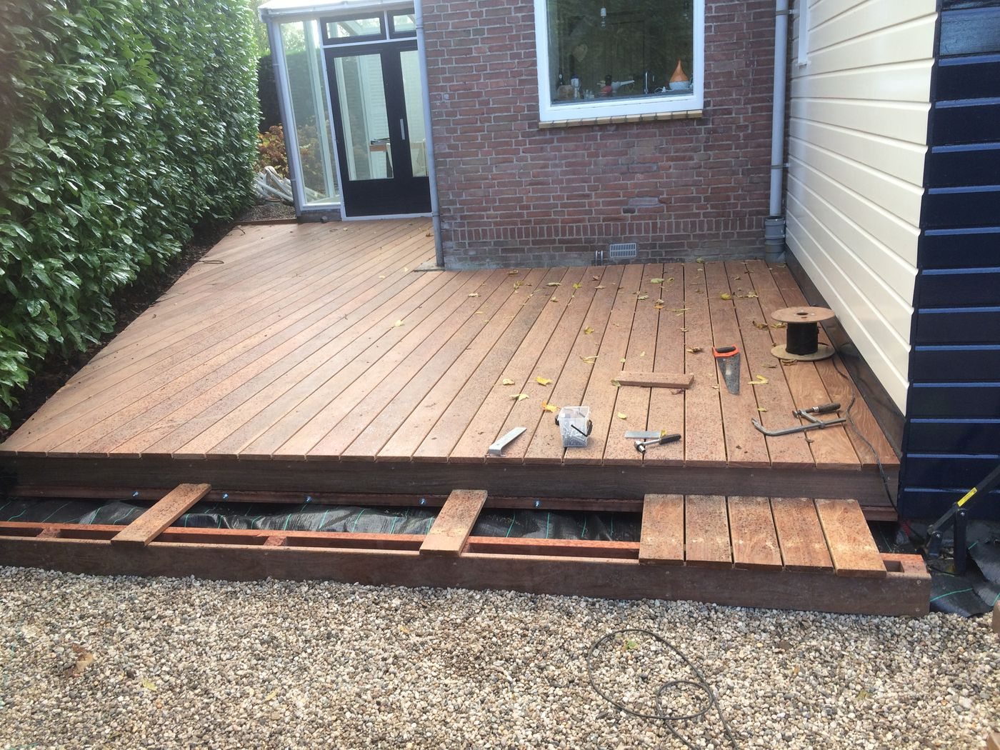
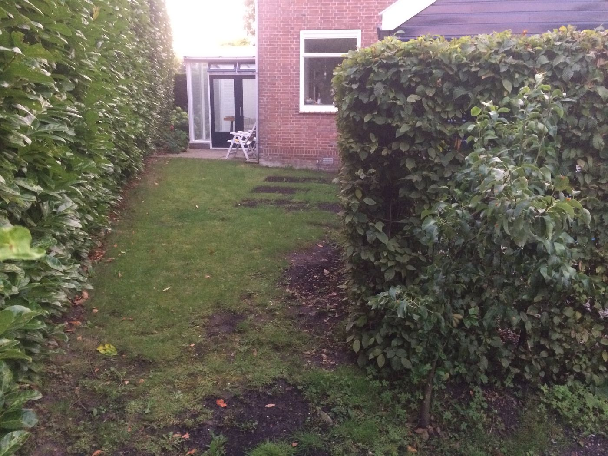
Strijen, Leeuwerikstraat
Voortuin aan een drukke weg
De ondergrond hier is veen en de tuin was flink verzakt, dus we hebben hem flink opgehoogd. Aan een drukke weg is veilig, efficiënt en schoon werken extra belangrijk.
Ons advies
- Bloembakken elk op een eigen fundering
- Lijmvoegen, zodat onkruid minder kans krijgt
- Grover siergrind, zodat blad makkelijk op te ruimen is


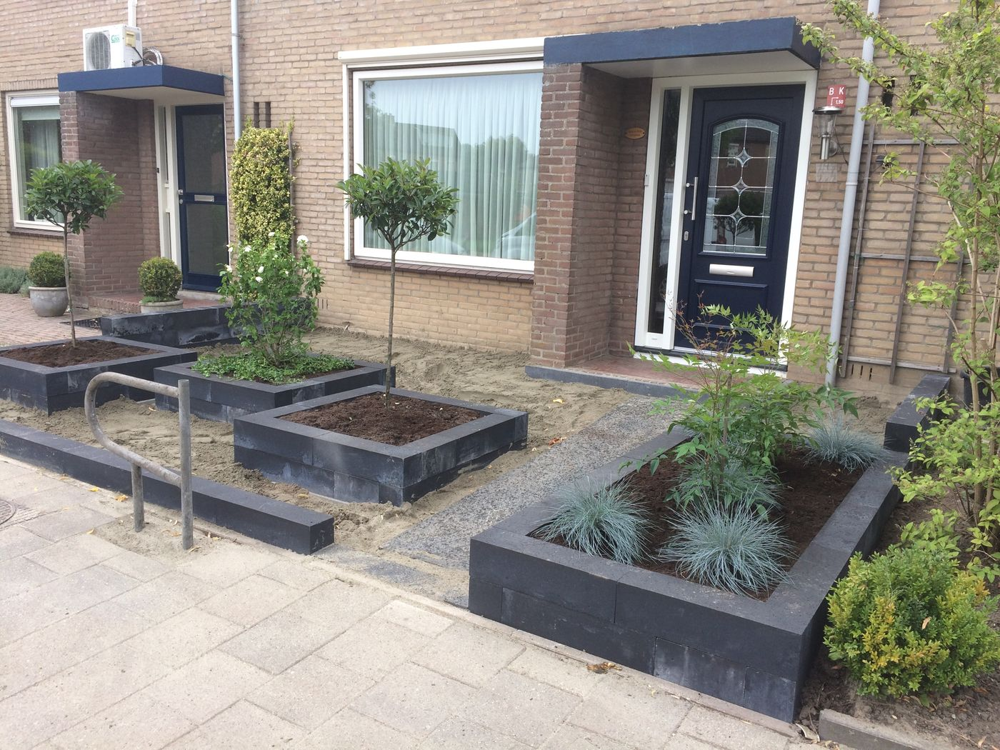
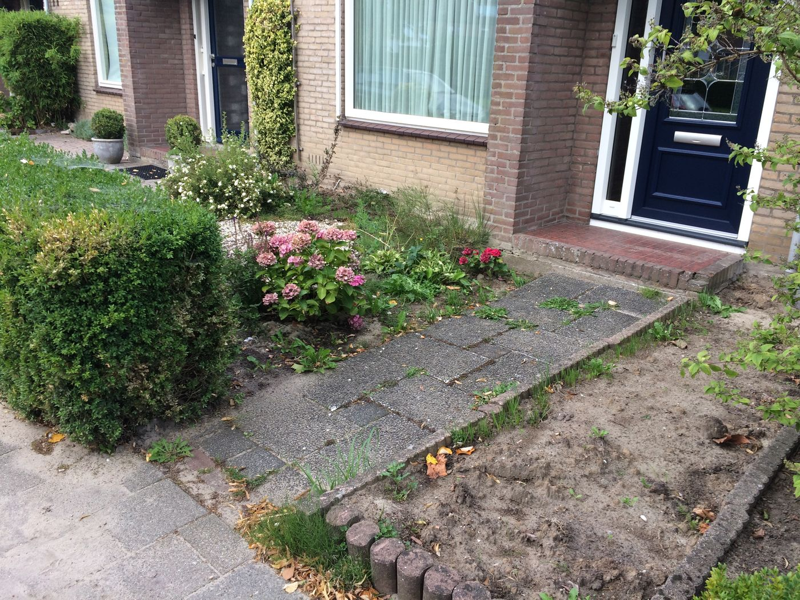
Strijen, Willem de Zwijgerstraat
Karpervijver van 2 meter diep
Een grote vijver voor karpers, 2 meter diep tegen temperatuurschommelingen. De ca. 14 m³ kleigrond is in één dag afgevoerd, zodat de buren er geen last van hadden.
Ons advies
- Rubberfolie, ook voor de prijs de beste keuze
- De vijver verhogen vanwege het grondwater
- Een rand van natuursteen voor een strakke uitstraling

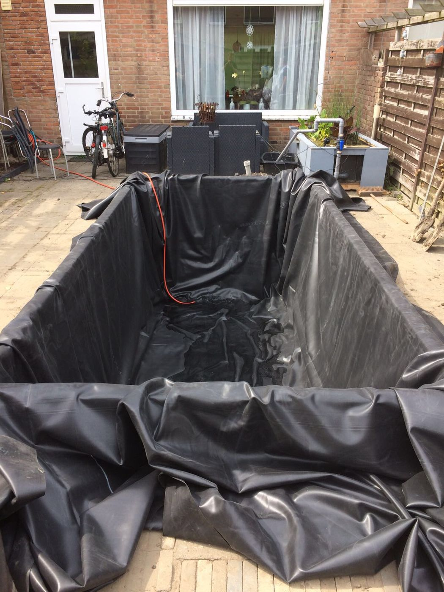
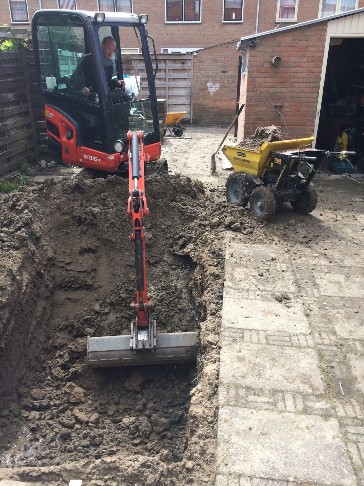
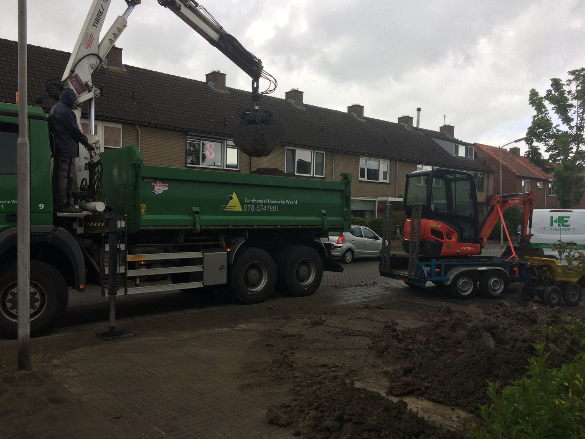
Klaaswaal, Elzenlaan
Twee tuinen, dezelfde materialen
Twee tuinen die aan elkaar vastzitten, met dezelfde materialen. De bloembakken zijn hoger gemaakt, zodat de bewoners minimaal hoeven te bukken. Het inplanten deden ze zelf.
Ons advies
- Grotere muurblokken voor een rustige uitstraling
- Onderhoudsvriendelijke tegels in de voortuin
- Lijmvoegen tegen onkruid

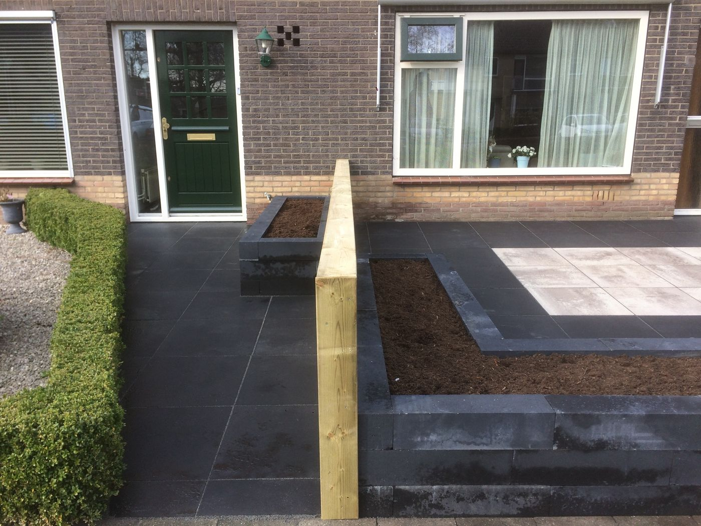
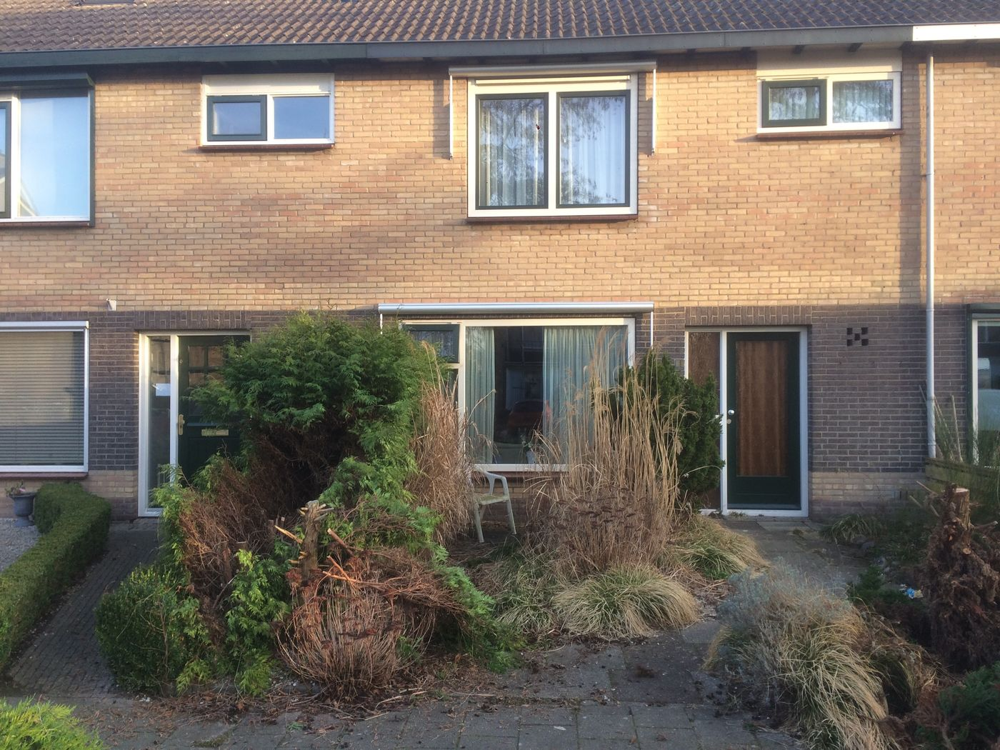
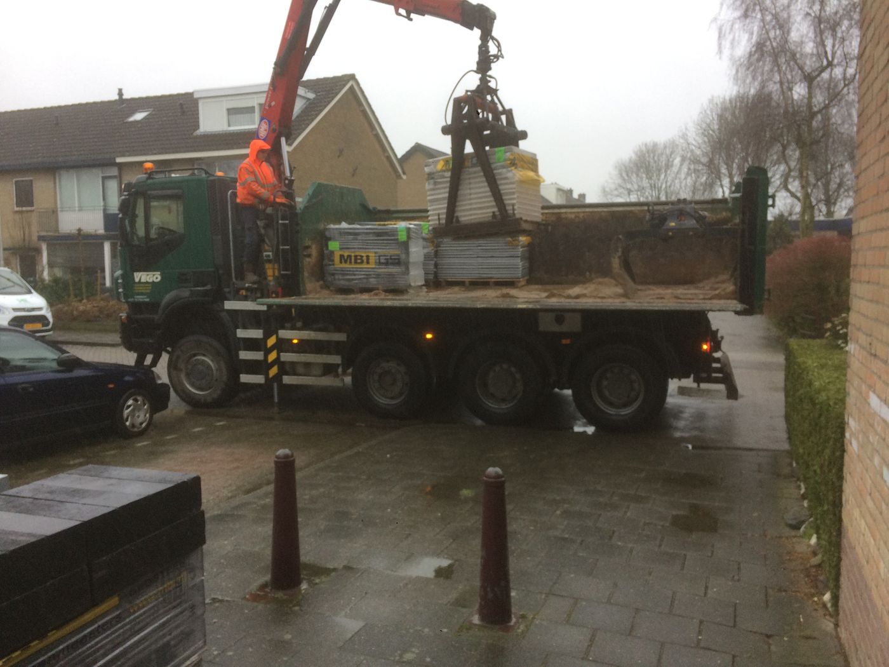
Offerte aanvragen
Vertel kort wat u in gedachten heeft, dan nemen we contact met u op voor een afspraak.
Liever even bellen?
Bel of app Alex en Paul direct voor een afspraak of een vraag over uw tuin.